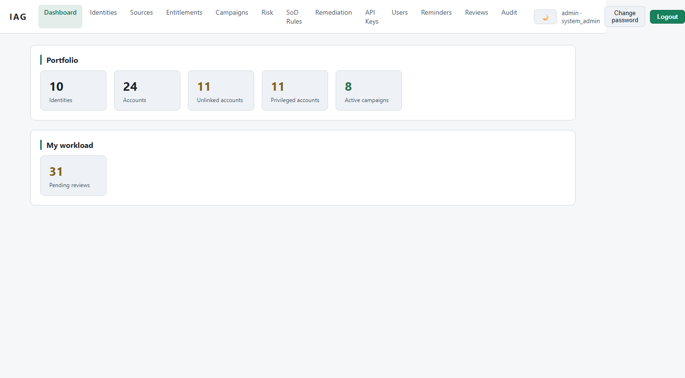
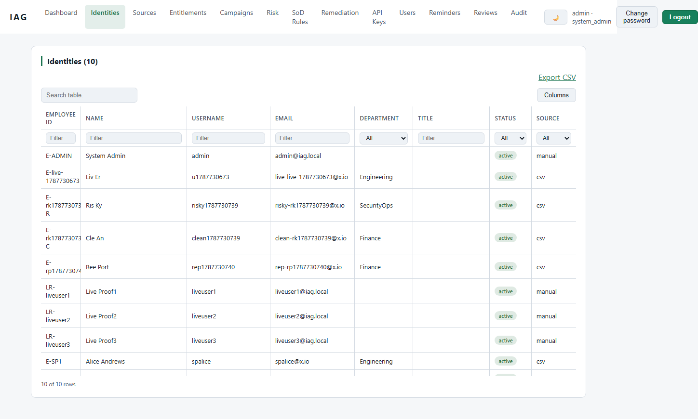
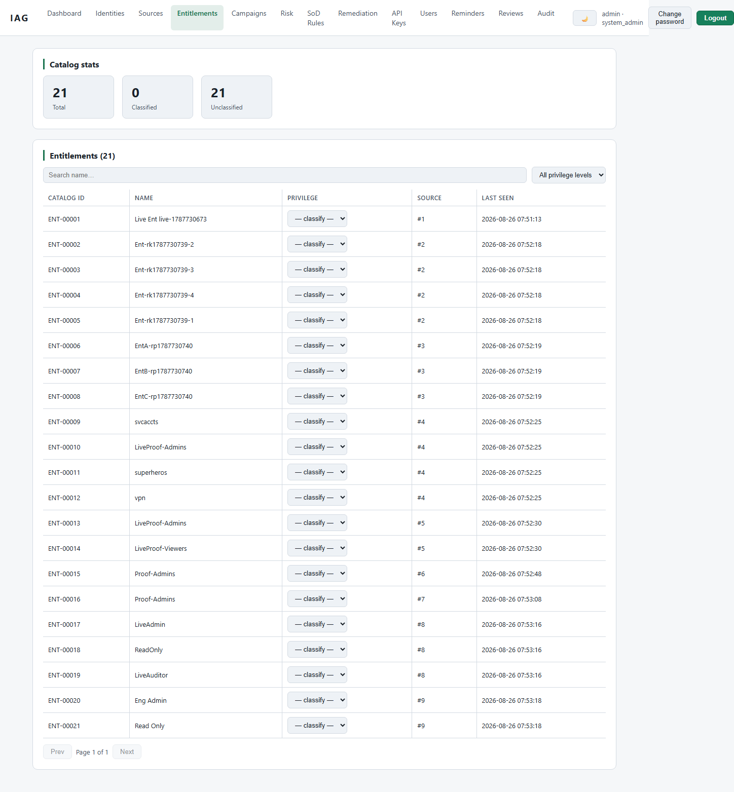
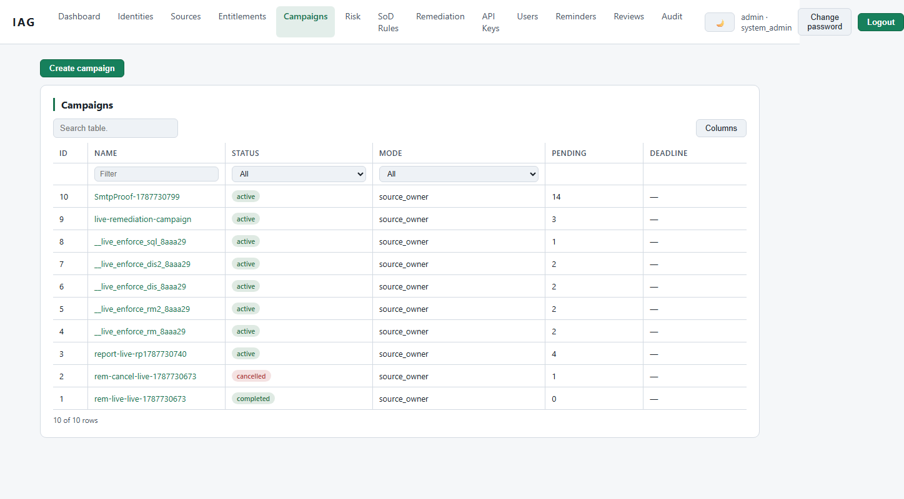
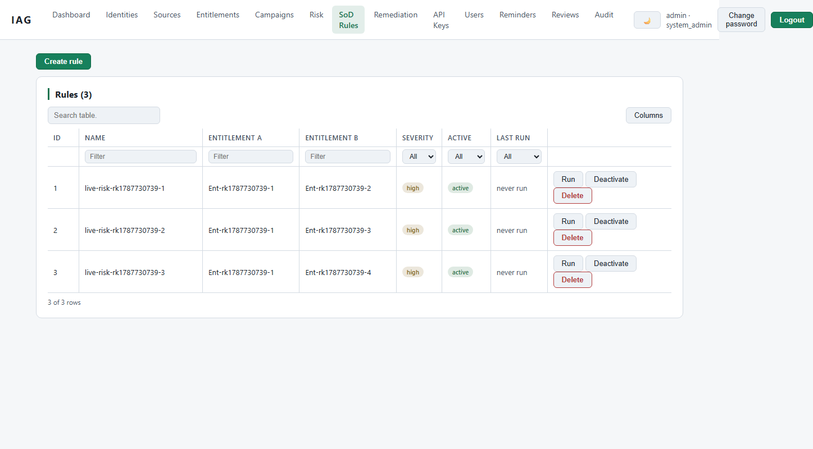
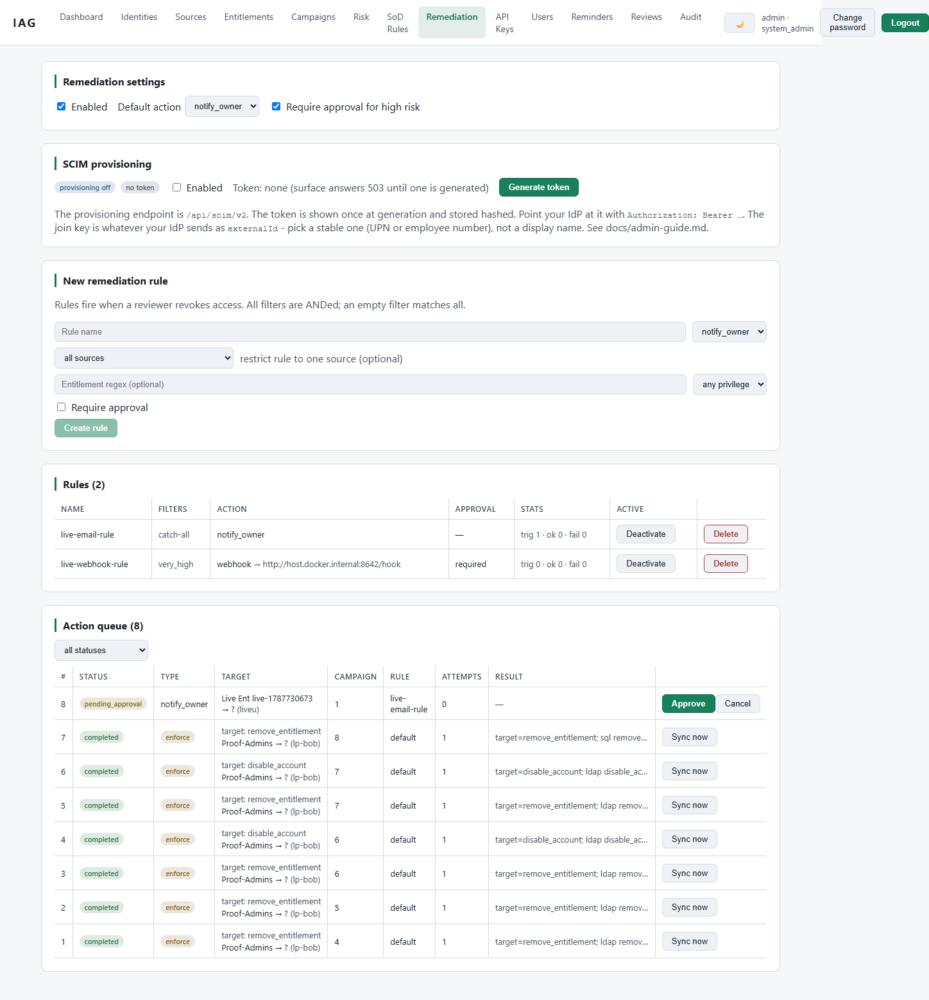
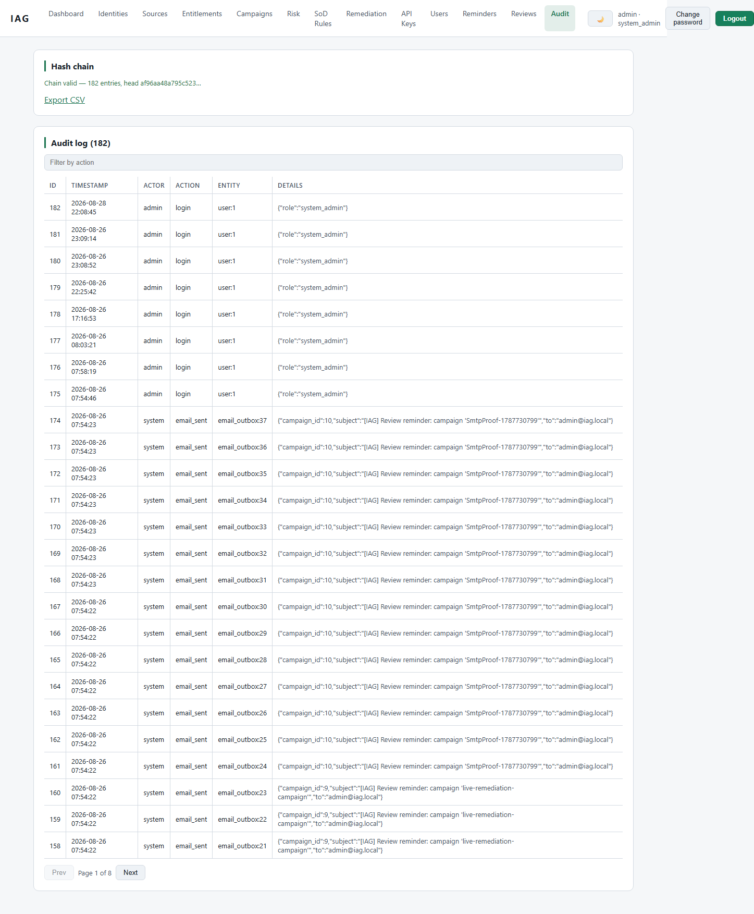
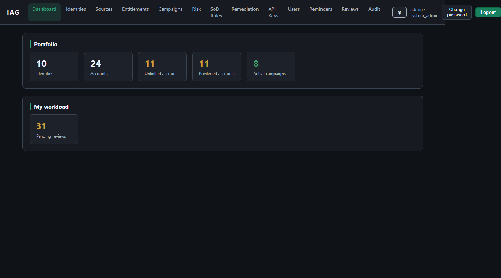

Every access decision,
on the record.
Verifiably.
IAG ingests identities and their access from LDAP, Microsoft Entra ID, SQL or CSV, normalizes them into an entitlement catalog, and puts every certification decision — approve, revoke, remediate — into a tamper-evident, hash-chained audit trail. Your data never leaves your infrastructure.
Built on four contracts
§ 01 — CAPABILITIESIngest from anywhere
CSV uploads and live connectors — LDAP/AD, Entra ID, SQL, CSV-on-URL — normalize accounts and access into a stable entitlement catalog. Re-syncs refresh; they never duplicate.
Certify in campaigns
Scope by source, department, privilege, or orphaned accounts. Reviewers resolve each access review; campaigns auto-complete at 100% decided, with SoD toxic-combination flags surfaced inline.
Enforce with write-back
Decisions trigger rules that notify owners by email, call webhooks, or write access changes back at the source — LDAP member removal, Entra group writes, SQL statements.
Prove it later
An append-only, hash-chained audit trail commits in the same transaction as every state change — plus a chain-verification endpoint and a pull-only JSONL SIEM feed.
From raw directory to enforced decision
§ 02 — WORKFLOWIngest & normalize
Connect a source and IAG pulls identities and entitlements into the catalog. Every sync is an audit event; re-syncs upsert, they never duplicate rows.
Scope the campaign
Filters by source, department, privilege tier, or orphaned accounts define the review population. SoD rules pre-flag toxic combinations before reviewers see them.
Decide, with evidence
Reviewers approve or revoke each access item. Each decision writes an audit entry hash-chained to everything before it — decisions are provable after the fact.
Enforce at the source
Revocations trigger enforcement rules: email the owner, fire a webhook, or write the change back to LDAP, Entra ID, or SQL — and log the outcome to the chain.
The product, on the record
§ 03 — SPECIMENSNot mockups. These are working views of IAG v0.3.0, captured by an automated evidence pipeline that screenshots the running stack and verifies the audit chain on every docs build.

The estate at a glance
Identity counts, live campaign progress and the latest audit activity, rendered by the running stack — the same views the evidence pipeline captures on every docs build.

One table for every source
Accounts from LDAP, Entra ID, SQL and CSV normalize into a single identities table. The department, source and risk columns here are the same filters you scope campaigns with.

A catalog you can certify against
Raw access from every connector becomes a normalized catalog of roles and applications — so reviews compare like with like instead of source-specific names.

Campaigns that close themselves out
Each campaign shows its reviewer queues and live progress, and auto-completes at 100% decided — no dangling review state.

Toxic combinations, flagged early
SOD rules define access that should never coexist. Hits surface inline during review — before anything is approved.

Decisions that enforce themselves
A revocation can email the owner, fire a webhook, or write the change back at the source — LDAP membership, Entra groups, SQL statements — with the outcome logged to the chain.

The record that outlives the dashboard
Every state change commits with its audit entry in one transaction. The viewer shows the chain; a verification endpoint proves it end to end.

Built for the people who live in it
Every view ships a dark theme. The operators running campaigns at 2 a.m. get the same interface, not an afterthought.
Tested, not assumed
§ 05 — PROOFAn architecture you can audit
§ 04 — ARCHITECTURE
Browser ──▶ nginx (LB; no DB creds, no writes)
├─▶ iag-app-1 ─┐
├─▶ iag-app-2 ─┼─▶ PostgreSQL 16 (single writer of truth)
├─▶ iag-app-3 ─┘ ▲
└─▶ iag-migrate (one-shot Alembic, then exits)
│
audit_entries: append-only, hash-chained
record_hash = SHA256(prev_hash + canonical_json(entry))
STATELESS REPLICAS
Kill any app replica mid-request and the worst case is one retried request. Sessions are signed stateless JWTs — any replica validates any session.
TRANSACTIONAL AUDIT
Every state change commits with its audit entry in the same transaction, or not at all. Container logs are telemetry, never evidence.
MIGRATION AUTHORITY
Only the one-shot migrate container runs Alembic. App replicas wait for a healthy DB but never alter schema.
FAULT TOLERANCE, PROVEN
scripts/smoke.sh kills a replica and asserts the service survives and the chain stays valid — resilience is a test, not a claim.
Full documentation lives at its own address
The complete administrator guide — every view, every workflow, verified against the running stack by the same evidence pipeline — is published at docs.iam-simplified.com.
Get running
§ 07 — DEPLOY# 1. Generate local secrets (writes .env) python scripts/gen_env.py # 2. Build and start docker compose up -d --build # 3. Log in at http://localhost:8090 # user: admin # password: $IAG_BOOTSTRAP_ADMIN_PASSWORD
- ✓Docker only. The image builds the frontend and backend; no host tooling beyond Docker.
- ✓Connectors on demand. --profile connectors adds a read-only LDAP and a writable OpenLDAP for testing write-back.
- ✓Runs where your data lives. Postgres volume, local SMTP or smarthost, no outbound calls required.